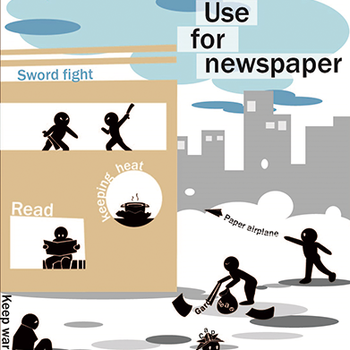

今回、新聞広告の授業で「平和」をテーマに制作しました。
新聞の広告であるということだったので、新聞紙と関連した広告にしようと考えました。
あなたが今読んでいる新聞をどう使うか、その使い方は人によって大きく違います。
読んだり、何かを保温するときに使ったり、相手に何かをつたえたり、人を傷つけたり、捨てられてゴミになっていたり、
飾りとして身に着けたり、寒さをしのぐために身に付けたり、友達と遊ぶために使ったり、外国では遺体にかぶせてあったりと
探すといくつでも使い方は出てきます。けれど、そこに平和な使い方、平和ではない使い方が出てきます。
自分が今手に取っている物がどう使われているのか、身近に平和ではない世界があるのだと認識をしてもらえるようにしました。
